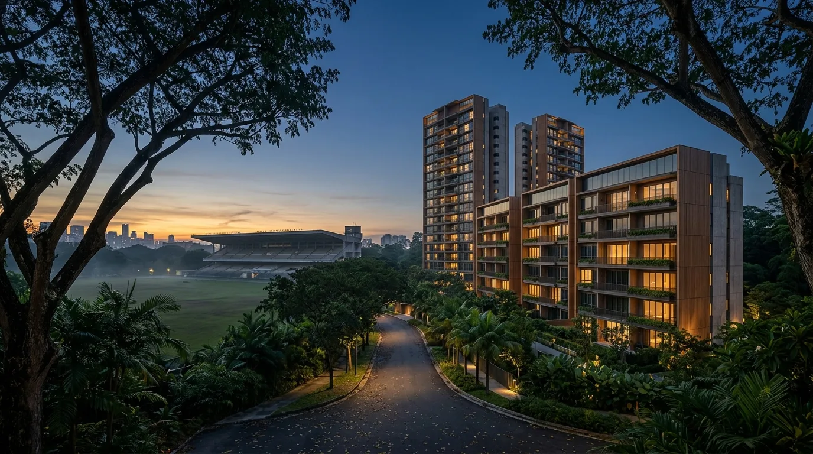
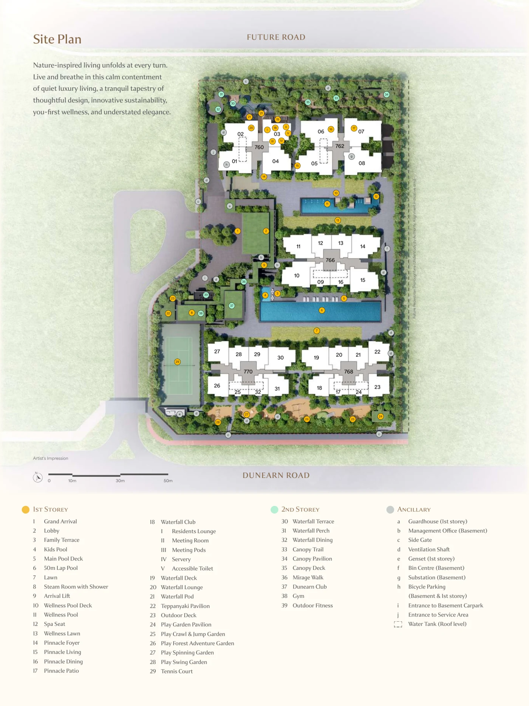
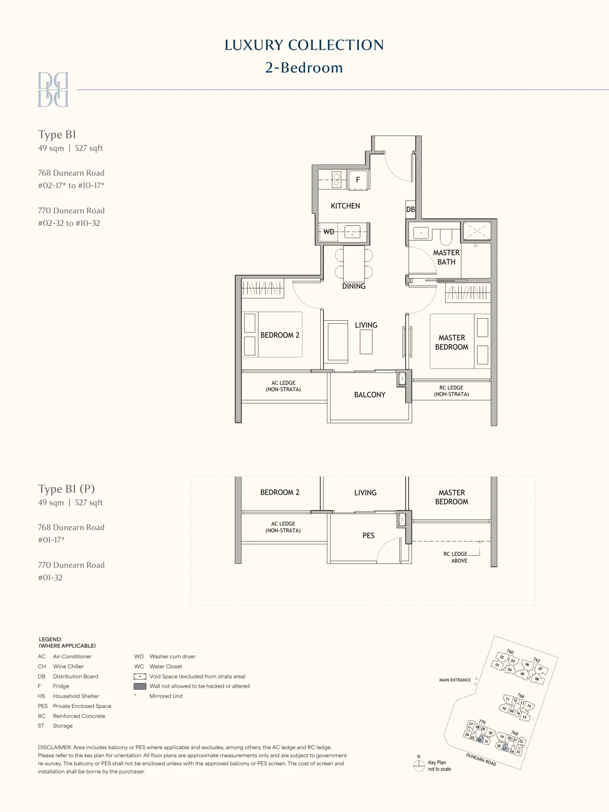

Dunearn House (Bukit Timah Turf City): Pricing & Financing Guide 2026

Dunearn House is the first private residential launch inside the rejuvenated Bukit Timah Turf City. It is a 380-unit, 99-year leasehold project on Dunearn Road (District 11), by a Frasers Property, Sekisui House and CSC Land joint venture. Indicative pricing starts from about S$1.475M for a 527 sqft 2-bedroom (~S$2,799 psf), with larger 3- and 4-bedroom layouts above that. On financing it is a standard private-property bank loan: 75% LTV on a first property, TDSR at 55% against the MAS 4% stress rate, Buyer's Stamp Duty about S$43,600 on a S$1.475M unit, and progressive payments over the roughly three-to-four years to completion. A fresh 99-year lease means full CPF usage and full loan tenure. Get your IPA before you book.
Want the numbers for your unit? Run a quick affordability check or WhatsApp Dan.
- The headline: the first Turf City private home
- Why Bukit Timah Turf City: MRT, schools, nature
- The project: 380 units, five blocks, two collections
- Dunearn House price and the leasehold question
- Financing a Dunearn House unit: the 75% LTV math
- CPF and the 99-year lease
- Progressive payments through construction
- TDSR & the 4% stress test per tier
- IPA timing: book the loan, not just the unit
- The rate decision: floating now, fixed at TOP
- Four moves before you OTP
- Common questions
The Headline: the First Turf City Private Home
Dunearn House is the first private residential development to launch inside the new Bukit Timah Turf City, the former Singapore Turf Club racecourse grounds now being redeveloped into a residential and lifestyle district. The URA Master Plan earmarks the precinct for 15,000 to 20,000 new homes, so the address will change a great deal over the next decade.
The development sits on Dunearn Road in District 11, on a 99-year leasehold Government Land Sales site that the Frasers Property, Sekisui House and CSC Land Group joint venture (Phoenix Dunearn Pte Ltd) secured through the June 2025 GLS tender. It carries 380 units across five blocks, and indicative pricing opens from about S$1.475 million for a two-bedroom.
Buying first into a precinct has an obvious trade-off. The surrounding amenities, the future Turf City MRT station and the wider masterplan are not built yet, so more of the value sits on trust. Against that, you enter at day-one pricing in an established, freehold-heavy Bukit Timah enclave where new leasehold supply is rare. The financing mechanics are the same as any building-under-construction private purchase, and the rest of this guide covers them.
Why Bukit Timah Turf City: MRT, Schools, Nature

Dunearn House site plan: five blocks fronting Dunearn Road, wrapped around a 50m lap pool, Waterfall Club and play gardens. Source: developer e-brochure.
The Bukit Timah location does the heavy lifting. A few things stand out for Dunearn House in particular:
- Sixth Avenue MRT on the Downtown Line is about a four-minute walk, King Albert Park is one stop away, and Botanic Gardens (Circle Line interchange) is two. A future Turf City MRT station on the Cross Island Line is planned within the precinct. That puts Orchard around five stops out and the CBD within a single transfer.
- The schools are the draw for most families here. Methodist Girls', Nanyang Girls' High, Hwa Chong Institution, National Junior College, Raffles Girls' Primary, Nanyang Primary and Pei Hwa Presbyterian all sit in the wider catchment, alongside a cluster of international schools and NUS Bukit Timah.
- Green space is everywhere. Bukit Timah Nature Reserve, Rifle Range Nature Park, the Rail Corridor, the Bukit Timah–Rochor Green Corridor and the Singapore Botanic Gardens are all close, and Turf City itself is planned as a car-lite district with a canopy trail.
- The masterplan keeps 22 conservation buildings from the old Turf Club: the grandstands, stables and bungalows, repurposed into community spaces. That is what gives the precinct its character rather than a blank-slate feel.
None of this changes how a bank sizes your loan. Valuation follows transacted comparables and the unit's own attributes. It does explain why demand and future resale liquidity for a well-located Bukit Timah project tend to hold up. For the loan itself, what matters is the numbers below.
The Project: 380 Units, Five Blocks, Two Collections
Dunearn House is arranged as five blocks in two tiers. The Pinnacle Collection (blocks 760 and 762) rises to about 19 storeys; the Luxury Collection (blocks 766, 768 and 770) sits at up to 10 storeys. The unit mix runs from compact two-bedders up to four-bedroom layouts:
- 2-Bedroom (from 49 sqm / 527 sqft), 2-Bedroom Premium and 2-Bedroom + Study
- 3-Bedroom, 3-Bedroom + Flexi/Study and 3-Bedroom Premium
- 4-Bedroom, 4-Bedroom Premium and 4-Bedroom Premium + Study

The entry 2-bedroom (Type B1), 49 sqm / 527 sqft. This is the layout most first-time and investor buyers will finance. Source: developer e-brochure.
The development leans into a biophilic, wellness brief: a 50m lap pool, a wellness pool, a Waterfall Club, Pinnacle Living lounges, a tennis court, gym and a forest-inspired play garden, with about 35% green coverage across the site and a BCA Green Mark Platinum (Super Low Energy) target. It is deliberately car-lite, with 228 car park lots plus 3 accessible lots for 380 homes, and comes with smart-home features and appliances by Franke, Smeg, Geberit and Hansgrohe. For financing, the number that matters out of all this is the quantum. The entry two-bedroom is the layout most first-timers and investors size a loan around, which is why the worked examples below start there.
Dunearn House Price: Indicative Figures and the Leasehold Question
Indicative pricing published around launch, all provisional until you exercise the Option to Purchase:
| Unit Type | Size (from) | Indicative From | Approx psf |
|---|---|---|---|
| 2-Bedroom | 527 sqft | ~S$1.475M | ~S$2,799 |
| 3-Bedroom | — | On request | — |
| 4-Bedroom | — | On request | — |
Indicative pricing as of 16 July 2026. The 2-bedroom entry is the firm anchor; 3- and 4-bedroom per-type pricing is confirmed at booking. Ask us for the live price list.
Then there is tenure. Dunearn House is 99-year leasehold, in a part of Bukit Timah where much of the surrounding stock is freehold. In practice that usually means a lower entry quantum than a comparable freehold unit nearby, which helps affordability, in exchange for a lease that runs down over time. The trade-off matters most for your exit horizon rather than your purchase. A fresh 99-year lease carries no financing restrictions today (see CPF below), but the further out you plan to sell, the more the remaining lease will factor into a future buyer's own loan and CPF. For most owner-occupiers on a normal holding period it is a non-issue. For a long-hold investor it is worth pricing in.
Financing a Dunearn House Unit: the 75% LTV Math
This is private property, so you are on a bank loan. No HDB concessionary rate, no MSR cap, just MAS Notice 645 TDSR at 55% of gross monthly income. You can borrow up to 75% on a first property, over a tenure that stops at 30 years or age 65, whichever comes first.
Upfront cash and stamp duty (2BR at S$1.475M)
Working off the entry two-bedroom, the money in breaks down as:
- 5% in cash to book (~S$73,750), paid when you exercise the Option to Purchase.
- 20% in cash or CPF (~S$295,000), due at Sale and Purchase signing, usually within 8 weeks.
- Buyer's Stamp Duty, about S$43,600 on S$1.475M, within 14 days of the OTP (IRAS BSD).
- ABSD on top if it applies: 20% for a Singapore Citizen's second property, more for PRs and foreigners (IRAS ABSD schedule).
- The 75% bank loan (~S$1.106M), drawn down in stages through construction.
Scale that up for the larger layouts: the down-payment and BSD both rise with the price, and because BSD is tiered it climbs faster than the price does. An illustrative S$2.5M three-bedroom carries roughly S$94,600 of BSD, because the top slices are taxed at 4–5%. Run your exact tier before you commit. Our affordability check does the LTV, TDSR and stamp-duty math in one pass.
CPF and the 99-Year Lease
The leasehold tenure touches your financing in one place, and it works in your favour. CPF usage on a property is restricted only when the remaining lease does not cover the youngest buyer to age 95. A brand-new 99-year lease clears that easily for any buyer, so you can use your CPF Ordinary Account in full for the 20% cash-or-CPF portion and for monthly instalments, within the usual Valuation Limit and Withdrawal Limit (CPF Home Ownership portal). Loan tenure is not pro-rated either. The fresh lease comfortably outlasts a 30-year loan.
Two things to keep in mind even so. First, every dollar of CPF you draw keeps accruing 2.5% a year, compounded monthly, until you sell, so there is a refund to make good down the line. Emptying the OA early is not free. Second, the lease-decay point above is a future-buyer problem rather than yours. It only begins to bite when the remaining lease falls toward the 60-year mark, decades away for a 2026 purchase.
Progressive Payments Through Construction
As a Building-Under-Construction unit, Dunearn House uses the Normal Payment Scheme: the bank disburses your loan in stages as the developer hits construction milestones, not as a single lump sum. The schedule is fixed by statute and applies to every buyer the same way:
| Stage | % of Purchase Price | Typical Timing |
|---|---|---|
| OTP booking fee | 5% | Day 0 (cash) |
| S&P exercise | 15% | Within 8 weeks (cash/CPF) |
| Foundation | 10% | ~Month 6 |
| Reinforced concrete framework | 10% | ~Month 12 |
| Brick walls | 5% | ~Month 18 |
| Ceiling | 5% | ~Month 24 |
| Doors, windows, plastering | 5% | ~Month 30 |
| Car park, road, drains | 5% | ~Month 36 |
| TOP (Temporary Occupation Permit) | 25% | ~Month 42 |
| CSC (Certificate of Statutory Completion) | 15% | ~Month 54 |
Your instalment climbs in steps as the loan draws down. Early on it is small, since the bank only charges interest on the 10 to 20% that has been released. By TOP you are paying on the full loan. So size your budget on the TOP-stage instalment from the start. That full-loan figure is what you carry for 25 to 30 years. We lay out the full schedule, with a cashflow worksheet, in the Singapore Mortgage Free Report.
TDSR & the 4% Stress Test per Tier
MAS makes every bank test your loan at a 4% medium-term rate, whatever rate you actually take. Your limit is worked out at that 4%, not at the SORA-pegged rate you will really start on (well under 2.5% today), and the 55% TDSR cap is applied to that stressed figure. Indicative monthly stress-test instalments at 4% over 30 years, by quantum:
| Unit (indicative) | Loan @ 75% LTV | Stress instalment (4%, 30y) | TDSR income floor |
|---|---|---|---|
| 2BR (S$1.475M) | ~S$1.106M | ~S$5,280/mo | ~S$9,600/mo gross |
| 3BR (~S$2.5M*) | ~S$1.875M | ~S$8,950/mo | ~S$16,300/mo gross |
| 4BR (~S$3.3M*) | ~S$2.475M | ~S$11,810/mo | ~S$21,500/mo gross |
*3BR/4BR quanta are illustrative placeholders for the math, not quoted prices. Confirm the live price list before relying on them.
That 30-year column assumes you are 35 or younger when you buy, since the longest tenure that still allows 75% LTV needs the loan to finish by age 65. In your 40s you either shorten the tenure, which lifts the instalment, or take 55% LTV and put 45% down. The LTV/tenure trigger explainer has the full matrix.
Those income floors are before any other debt. A car loan, credit-card minimums and personal-loan instalments all come off your 55% headroom first, and bonus or self-employed income gets haircut (see the self-employed TDSR guide). For joint applicants and the income-weighted-average-age tenure rule, see the TDSR & stress test breakdown.
IPA Timing: Book the Loan, Not Just the Unit
The OTP clock is tight. You pay a 1% option fee to book, get a short window to decide, and lose that money if you back out. An In-Principle Approval, worked out against your real income documents, is what protects it. Skip it and your deposit is exposed if a bank later declines under MAS Notice 645 (TDSR), the 4% stress floor or your income papers.
A broker can usually turn an IPA around in about two weeks by sending your file to several banks at once rather than one after another. At a first-in-precinct launch where the well-priced stacks move first, that speed keeps you in the allocation rather than on the waitlist. The general approach to BUC financing is in the new-launch financing guide. Sort the IPA first and the rest follows.
The Rate Decision for a BUC Purchase: Floating Now, Fixed Later
One point catches most buyers out: a new-launch loan is floating-rate. The bank prices the progressive-disbursement loan off SORA, usually 1-month or 3-month Compounded SORA plus a spread. Fixed-rate packages are sold on completed properties, so they are simply not available while Dunearn House is being built. The fixed-versus-floating debate does not apply yet. During construction your only real choice is which floating package, so the spread, the lock-in and the free-conversion terms are what matter (here is the live rate comparison).
With a three-to-four-year construction tail, there are really two stages to think about:
- During construction the loan is only part-drawn, so a 100bps SORA move on 30% of it costs far less in dollars than the same move on the full amount. What matters at this stage is the package terms, not fixed versus floating.
- At completion it counts as completed property and the full menu, fixed packages included, opens up. Now the whole loan is drawn and you are paying the full instalment. This is the rate that really matters for the next 25-plus years.
So the sensible move is a floating package with good conversion or repricing terms now, then reprice or refinance at TOP. Go into fixed if you want certainty, or a tighter floating spread if SORA is working for you. Many new-launch packages include a free conversion that makes that switch cheaper, so read the conversion terms, not just the headline rate.
Four Moves Before You OTP
- Check your TDSR at the tier you actually want. A 2BR and a 4BR are more than S$10,000 a month apart in income floor, so run your affordability check at the 4% floor and buy what clears, not what a good bonus year makes look possible.
- Confirm your CPF plan. A fresh 99-year lease means full CPF usage, so decide how much OA to deploy versus keep as buffer, remembering the 2.5% accrued-interest refund on sale.
- Get your IPA sorted, about two weeks. An independent IPA across several banks at once protects your 1% option fee and keeps you in the allocation.
- Take the worksheet. The Singapore Mortgage Free Report has the BUC timeline (10 milestones), a 16-bank rate comparison, the TDSR/MSR check at the 4% floor, your upfront costs (BSD/ABSD/legal) and the refinance-at-TOP plan, all in one PDF.
Frequently Asked Questions
Indicative pricing starts from about S$1.475 million for a 2-bedroom of 527 sqft, which works out to roughly S$2,799 psf, with 3- and 4-bedroom layouts priced higher. All figures are developer-indicative and confirmed only when you exercise the Option to Purchase. Dunearn House is a 380-unit, 99-year leasehold development in Bukit Timah Turf City, so it is a standard private-property bank loan at up to 75% LTV.
Dunearn House is developed by Phoenix Dunearn Pte Ltd, a joint venture of Frasers Property, Sekisui House and CSC Land Group. It sits on a 99-year leasehold Government Land Sales site along Dunearn Road, the first residential plot to launch within the rejuvenated Bukit Timah Turf City. A fresh 99-year lease means you can still use CPF and take a full loan tenure without the lease-decay restrictions that apply to older leasehold homes.
On a first-property bank loan you put 25% down: 5% in cash when you exercise the Option to Purchase, then 20% in cash or CPF at Sale and Purchase signing. On a 2-bedroom at about S$1.475M that is roughly S$73,750 cash plus S$295,000 in cash or CPF, before progressive payments begin. Buyer's Stamp Duty is about S$43,600 on S$1.475M, due within 14 days of the OTP. Additional Buyer's Stamp Duty applies if this is not your first residential property.
As a unit under construction, Dunearn House uses the Normal Payment Scheme: 5% to book, 15% at Sale and Purchase (within 8 weeks), then staged draws at foundation (10%), reinforced concrete (10%), brick walls (5%), ceiling (5%), doors and windows (5%), car park and roads (5%), TOP (25%) and CSC (15%). Your instalment rises with each draw over roughly three to four years, so plan around the instalment at full disbursement, not at booking.
You can use your CPF Ordinary Account for the downpayment and instalments, because a fresh 99-year lease easily covers the youngest buyer beyond age 95, so there is no CPF pro-ration. On rates, though, a new-launch loan is floating-rate during construction: the bank prices the progressive-disbursement loan off Compounded SORA plus a spread, and fixed packages are sold on completed properties. Fixed becomes an option at TOP, when you can reprice or refinance.
Dunearn House is a 380-unit private condominium on Dunearn Road in Bukit Timah, District 11, across five blocks: two towers of up to 19 storeys (the Pinnacle Collection) and three blocks of up to 10 storeys (the Luxury Collection). It is a four-minute walk to Sixth Avenue MRT on the Downtown Line, one stop from King Albert Park, and sits inside the Bukit Timah school belt and the new Turf City masterplan.
Free, Independent Second Opinion on Your Dunearn House Loan
Nexus Mortgage SG compares 16+ MAS-regulated banks at no cost: IPA in about two weeks, BUC progressive cashflow modelled, CPF-on-leasehold checked, and your floating-now-reprice-at-TOP rate plan on one page.
Run My Dunearn House Numbers →Prefer a personal review? WhatsApp Dan Ler at +65 8752 0859 for a free portfolio review. Banks pay our fee, so you pay nothing.
Or download the full guide: Singapore Mortgage Free Report, with the BUC timeline, 16-bank rate comparison, TDSR/MSR stress test, upfront-cost breakdown and the refinance-at-TOP plan in one PDF.

About the author — Dan Ler has advised on Singapore home loans since 2017 at Nexus Mortgage SG, an independent brokerage comparing 16+ MAS-regulated lenders. Nexus has facilitated 500+ home loans across HDB, EC, private condo and landed property segments. Banks pay Nexus on disbursement, so there is no cost to the borrower.
Nexus Mortgage SG is an independent Singapore mortgage advisory. This article is general information, not financial advice, and is not a sale offer for Dunearn House. Nexus is an independent mortgage advisory and is not the appointed sales or marketing agent for the project. Project facts (unit count, blocks, unit mix, floor plan and site plan) are drawn from the developer e-brochure; developer, tenure and indicative pricing reflect publicly reported figures as of 16 July 2026 and are provisional until confirmed at OTP exercise. Loan, TDSR, BSD, ABSD and CPF figures are illustrative and reflect MAS, IRAS, URA and CPF positions as of publication; rules, prices and bank rates can change. Sources: MAS Notice 645 (TDSR), IRAS BSD, IRAS ABSD, CPF Home Ownership, URA Master Plan.